Blog
Working notes
Essays on climate science, artificial intelligence and the cost of the things we take for granted.
-
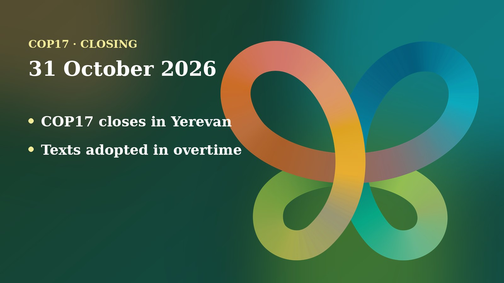
COP17 closes in Yerevan: a global review adopted in overtime, the money question left open
Nearly 200 countries approved key texts in overtime, including the first global review of the nature pact. Finance, the Cali Fund and the science panel stayed contentious, and Ecuador will host in 2028.
Read more -
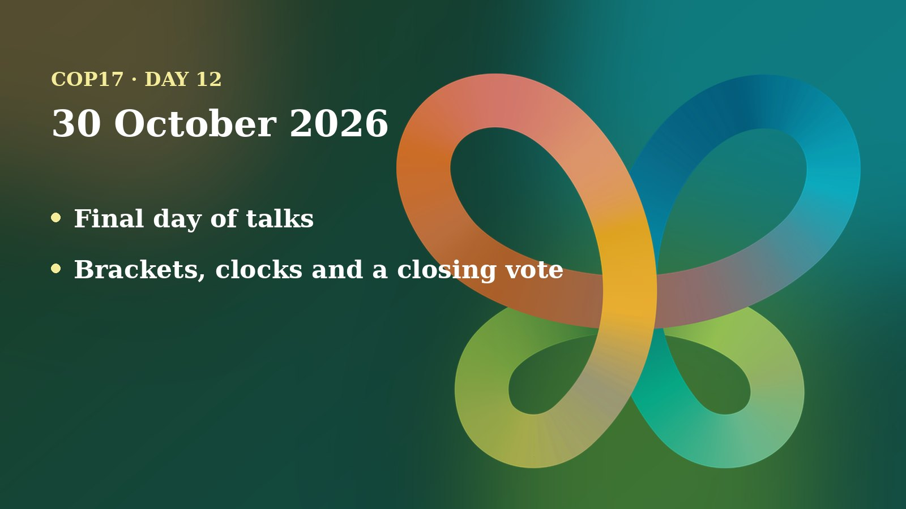
Day 12 in Yerevan: Last Day Opens With Clean Texts, Stubborn Brackets and a Ticking Clock
On the final scheduled day, delegates adopted several clean decisions, but mainstreaming, synthetic biology, climate and protected areas were still fighting over brackets, and the money and global review questions hung in the air.
Read more -
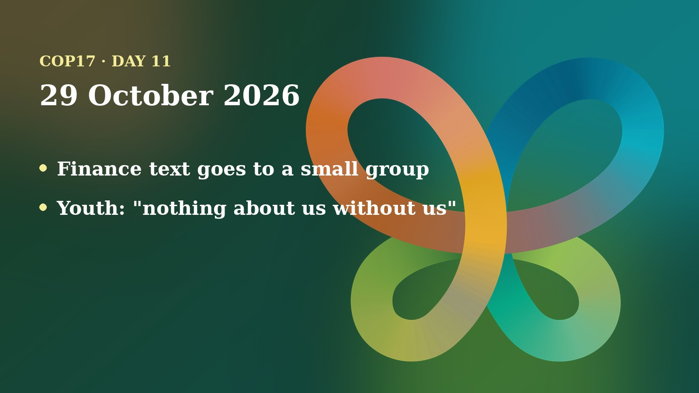
Day 11 in Yerevan: Finance Text Goes to a Small Group While Working Groups Race to Clean Their Drafts
With one day of working-group time left, negotiators cleaned several texts, sent the money question to a Friends of the Chair group, and fought over whether youth stay named in the wording.
Read more -
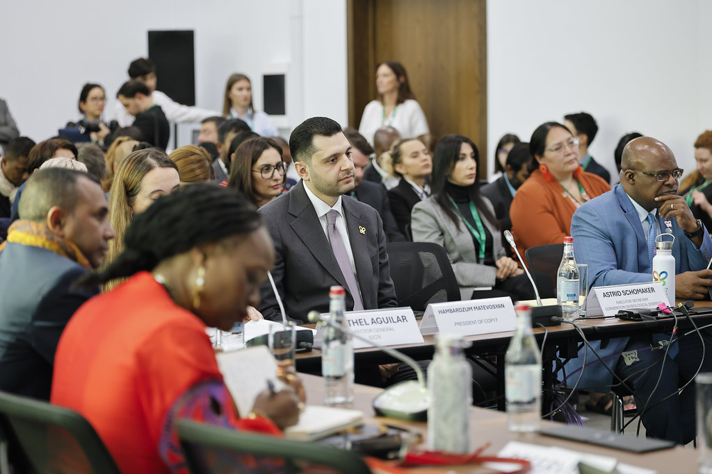
Day 10 in Yerevan: Ministers Hand the Hard Questions Back, and UNICEF Calls Nature Loss a Child Rights Crisis
Day two of the high-level segment brought 135 parties to the microphone, a COP18 host contest, and clear calls from UNICEF and youth groups to put children at the centre.
Read more -
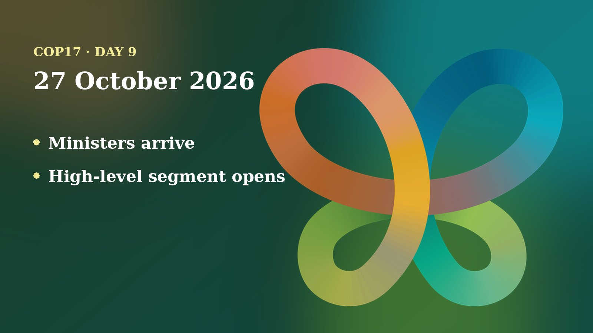
Day 9 in Yerevan: Ministers Take the Floor, and a 14-Year-Old Tells Them to Act
The high-level segment opened at COP17 with a finance dialogue and national pledges, while working groups kept clearing brackets on forests, farming and the sea.
Read more -

Day 8 in Yerevan: Finance Day Brings New Money Pledges and a Push to End Harmful Subsidies
Monday was Finance Day at COP17: the Global Environment Facility reached US$4.4 billion, the presidency launched a drive on harmful subsidies, and ministers arrive for the high-level segment.
Read more -
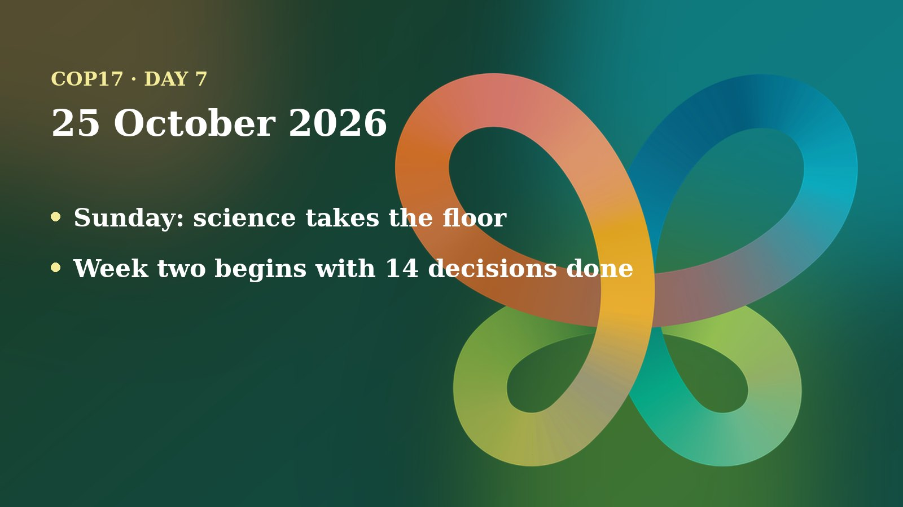
Day 7 in Yerevan: A Quiet Sunday, 14 Decisions Done and the Hard Money Questions Still Open
Week two of COP17 began on Sunday with the Science Forum while the biggest negotiating questions, money, soil and Indigenous participation, stayed open.
Read more -
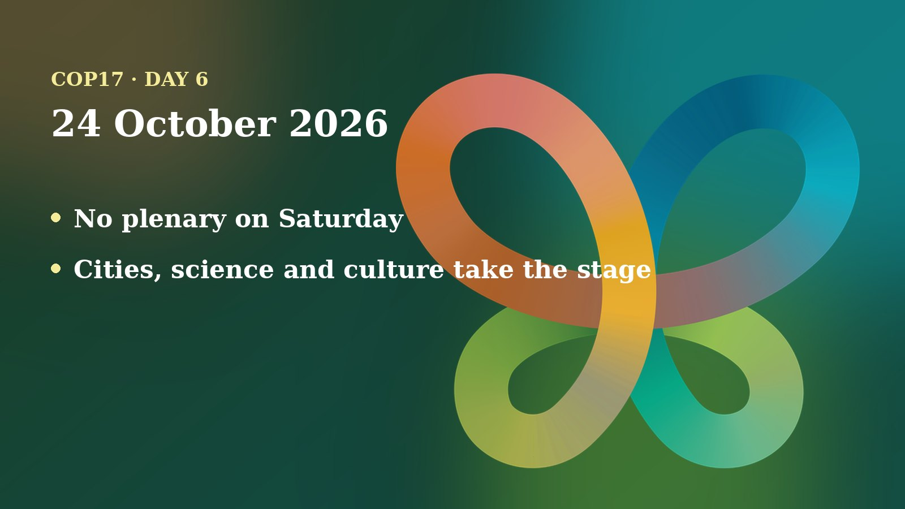
Day 6 in Yerevan: A Saturday Without Plenary, With Cities and Scientists on Stage and Hard Choices Waiting for Sunday
No formal negotiating sessions were scheduled on Saturday. Cities, scientists and cultural groups held their own summits while delegates prepared for Sunday's contact groups and the next plenary on Wednesday.
Read more -

Day 5 in Yerevan: A Stocktaking Plenary Adopts Biosafety, Gender and Education Decisions, and Youth Are Added to the Text
Friday evening's plenary adopted its first batch of decisions, delegates added “women and youth” to the education text at the last minute, and soil biodiversity talks went to a Friends of the Chair group.
Read more -
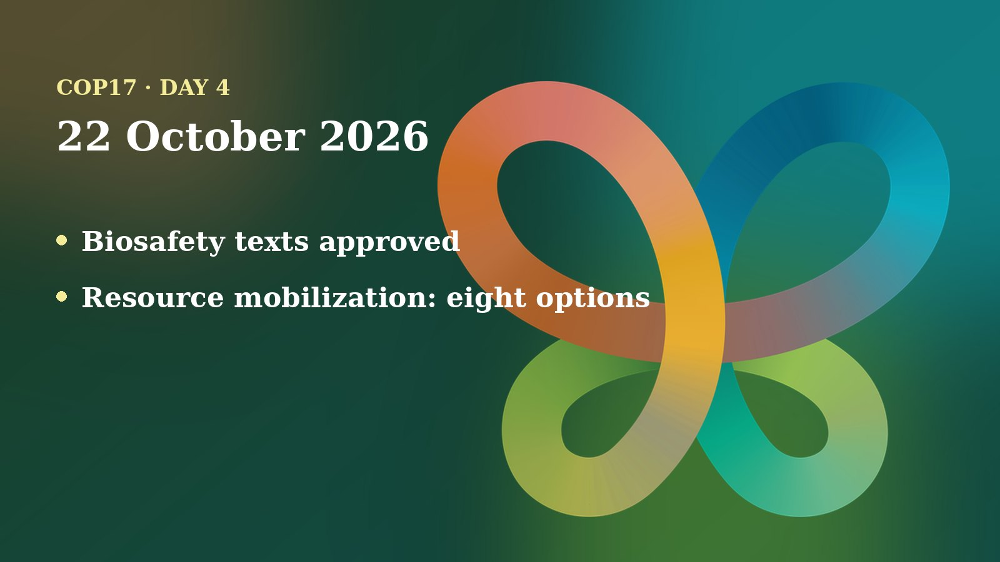
Day 4 in Yerevan: Biosafety Texts Close While Resource Mobilization Reopens the Question of Who Counts as a Donor
Working Group II approved most of its biosafety texts, Working Group I cleared education and knowledge-sharing drafts, and the money talks put eight options on the table for widening the donor base.
Read more -
Day 3 in Yerevan: Ten Contact Groups Work the Jigsaw While the Forest Decision Stalls on Wording
Working Group II kept grinding through forest and invasive-species texts while ten contact groups tackled money, genetic data, climate and monitoring. Plenty of brackets, a few agreements, and a youth call to close the justice gap.
Read more -

Day 2 in Yerevan: Working Groups Open, Genetic-Data Money Gets a Contact Group and a Forest Text Is Fought Word by Word
The first full day of working groups: Parties split over whether payments for genetic data can stay voluntary, a contact group was set up to resolve it, and a forest decision was negotiated paragraph by paragraph.
Read more -
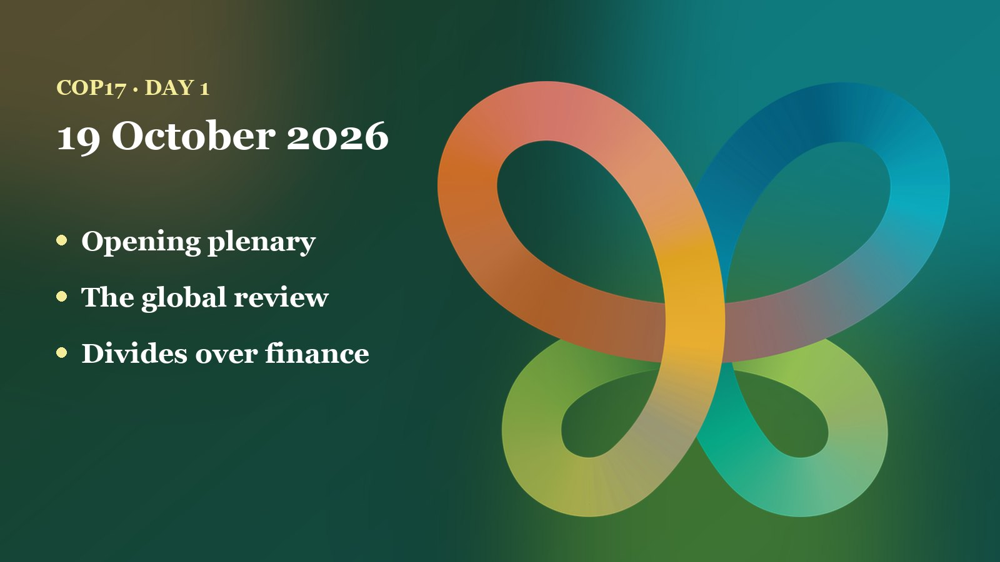
Day 1 in Yerevan: A New President, a Global Review and Familiar Divides on Money
The opening plenary elected Armenia’s Hambardzum Matevosyan as COP17 President, put the first global review of the biodiversity framework on the table, and showed where the big groups stand, above all on finance.
Read more -
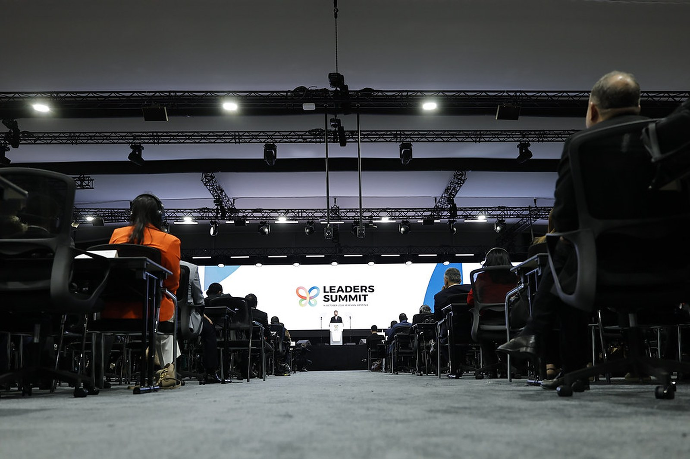
Day Zero in Yerevan: What the COP17 Leaders’ Summit Delivered
Three days before the negotiators sat down, world leaders met in Yerevan and adopted the Yerevan Declaration. Who was in the room, the numbers behind the call to act, and what it means for the two weeks ahead.
Read more -
The Heavy Cost of Small Talk: Syntactic Complexity and the Environment
A standard Google search costs about 0.3 watt-hours. Generating an AI response can cost ten times that — and politeness, filler and vague phrasing all add tokens. Self-attention scales quadratically, so every pleasantry compounds.
Read more -
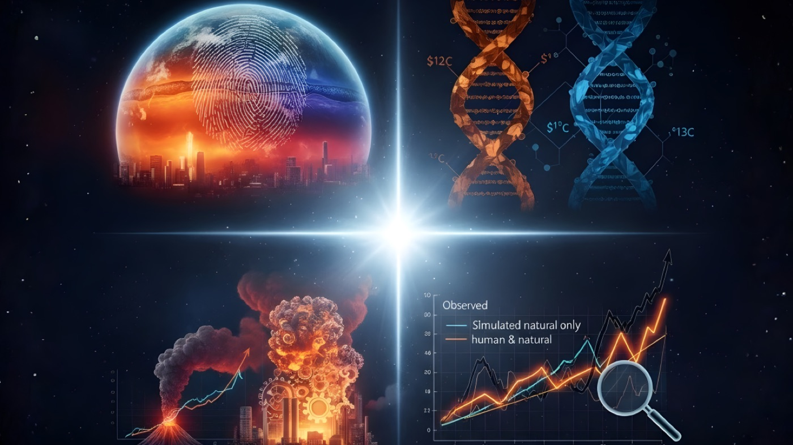
4 Minutes, 4 Proofs: Why Are We Certain That Climate Change is Human-Caused?
The confidence of the scientific community rests not on one argument but on several independent lines of evidence that converge. Four fingerprints — in the atmosphere, the carbon itself, the scale, and the models.
Read more
No posts carry that tag yet.